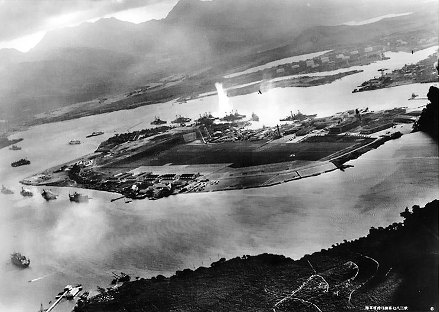
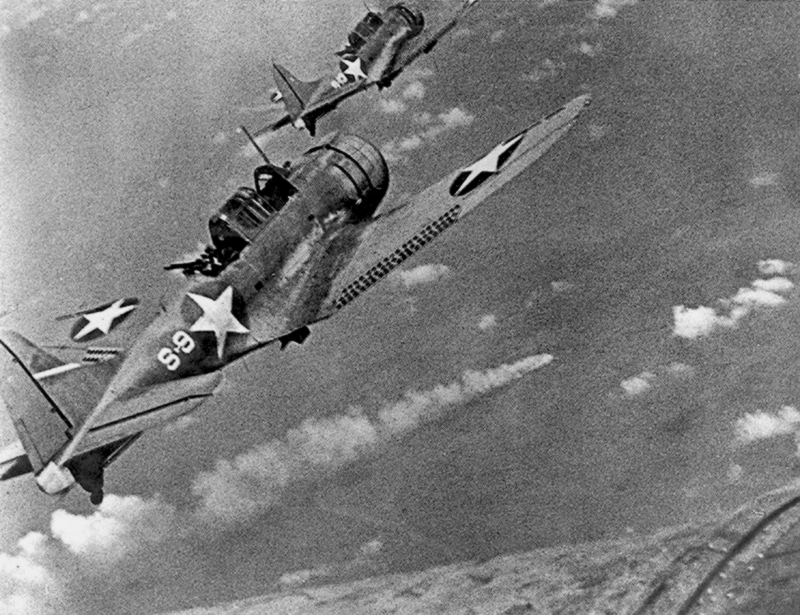
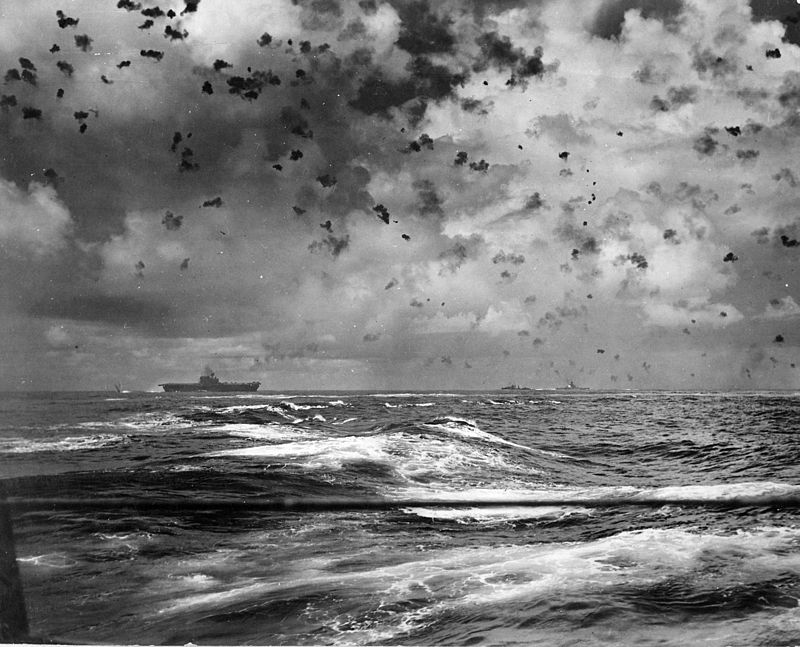
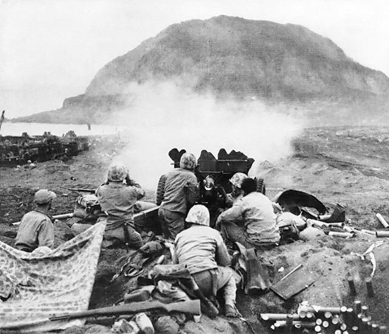
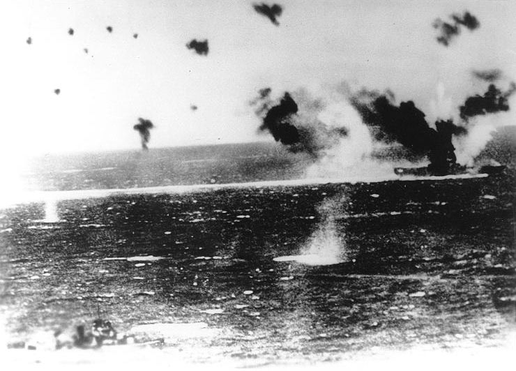

Проект по XML програмиране: "Самолетоносач"
Битки, в които е участвал самолетоносач Shōkaku

Пърл Харбър
Адмирали: Takijiro Ohnishi
(46 години),
Isoroku Yamamoto
(58 години),
Нападението над Пърл Харбър е изненадваща въздушна атака на японския Императорски флот срещу американската военноморска база при Пърл Харбър, Хаваи, извършена сутринта на 7 декември 1941 г.
Без предварително обявяване на война базата е атакувана от 353 японски бойни самолети, бомбардировачи и торпедоносци на две вълни, изстрелвани от шест самолетоносача. Унищожена е голяма част от американския тихоокеански военноморски флот.
Атаката е повратна точка в развоя на Втората световна война, тъй като става повод за влизането на САЩ, която да този момент е неутрална, във войната. Въпреки, че атаката причинява на САЩ значителни военни загуби, тя се оказва с фатални последствия за Япония. На следващия ден (8 декември) САЩ обявява война на Япония.

Битка при Мидуей
Адмирали: Takijiro Ohnishi
(46 години),
Isoroku Yamamoto
(58 години),
Nobutake Kondо
(66 години),
Битката при атола Мидуей се състои на 4 юни 1942 година и е една от най-значителните морски битки на Втората световна война. Флотът на САЩ побеждава обединения флот на Япония, който атакува атола Мидуей. Битката бележи повратен момент във войната в Тихия океан. Обединеният флот на Япония губи 4 тежки самолетоносача, 250 самолета и най-добрите си пилоти, с което загубва възможностите си да действа извън зоната на прикритие на бреговата авиация.

Битката при островите Санта Круз
Адмирали: Takijiro Ohnishi
(46 години),
Nobutake Kondо
(66 години),
Битката при атола Мидуей се състои на 4 юни 1942 година и е една от най-значителните морски битки на Втората световна война. Флотът на САЩ побеждава обединения флот на Япония, който атакува атола Мидуей. Битката бележи повратен момент във войната в Тихия океан. Обединеният флот на Япония губи 4 тежки самолетоносача, 250 самолета и най-добрите си пилоти, с което загубва възможностите си да действа извън зоната на прикритие на бреговата авиация.

Битката за Иво Джима
Адмирали: Nobutake Kondо
(66 години),
Битката при атола Мидуей се състои на 4 юни 1942 година и е една от най-значителните морски битки на Втората световна война. Флотът на САЩ побеждава обединения флот на Япония, който атакува атола Мидуей. Битката бележи повратен момент във войната в Тихия океан. Обединеният флот на Япония губи 4 тежки самолетоносача, 250 самолета и най-добрите си пилоти, с което загубва възможностите си да действа извън зоната на прикритие на бреговата авиация.

Битка в Коралово море
Адмирали:
Битката в Коралово море е морско сражение, състояло се на 6 - 8 май 1942 г. в Тихия океан между сили на Япония и САЩ през Втората световна война. Това е първата в историята морска битка, в която от двете страни участва само палубна авиация.
Изработено от Михаил Жеков, фн. 24469